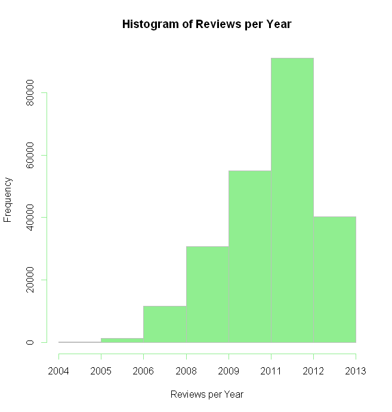
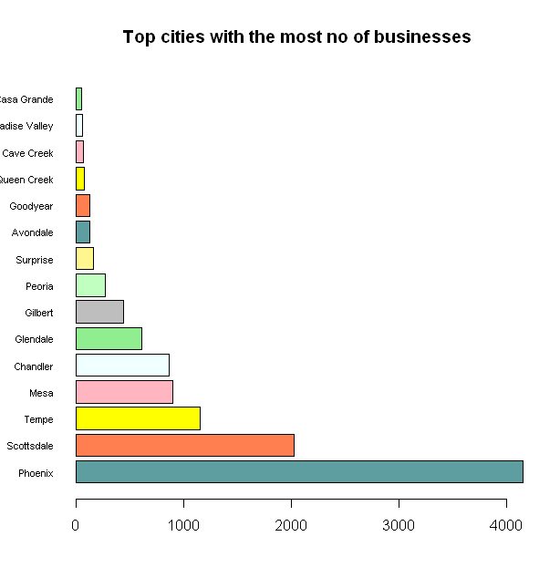
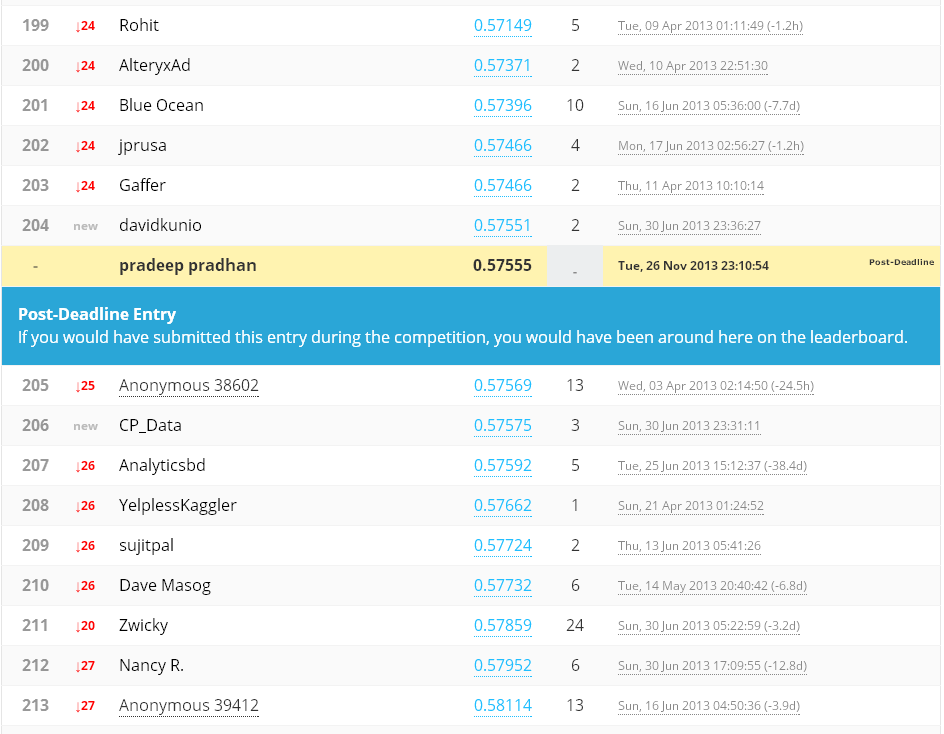
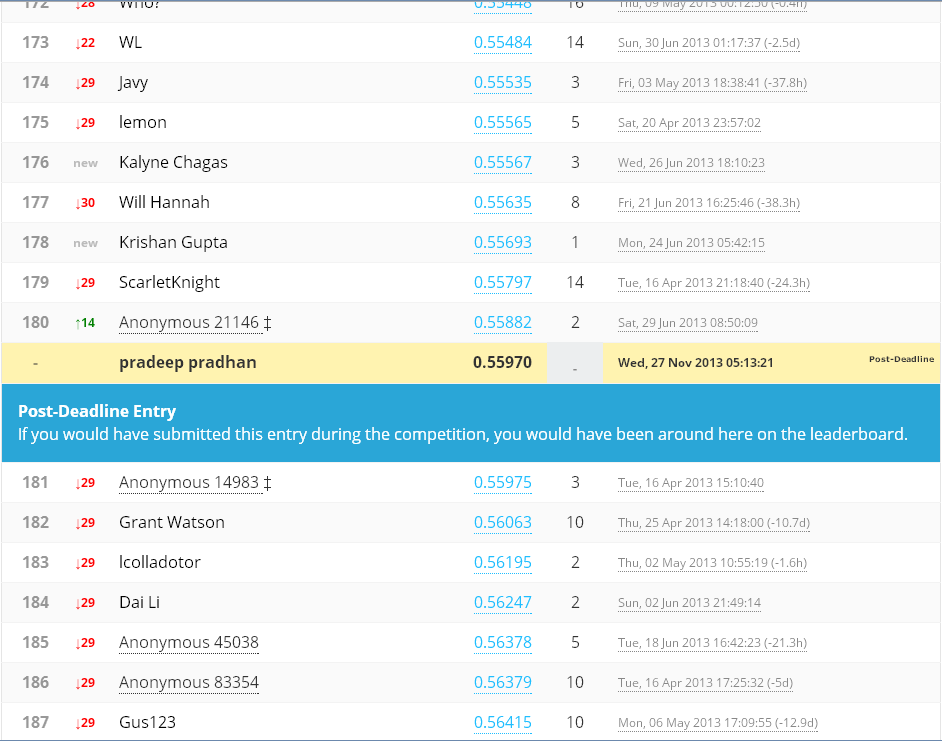

Technical Paper
Final Project - Data Science
General Assembly - Sydney - 2013
Topics
- Problem
- Data
- Solution
- Conclusion
(Description, Hypothesis...)
(Structure, Overview...)
(Approach, Implementation...)
(Observations, What's next...)
Problem
Yelp Recruiting Kaggle Competition
How many "useful" votes will a Yelp review receive?
Hypothesis
Reviews written by frequent and reputed users are most likely to get maximum number of useful votes.
Data description
- 11,537 businesses
- 8,282 checkin sets
- 43,873 users
- 229,907 reviews
In the training set:
Each file is composed of a single object type, one JSON object per line. The training data was recorded on 2013-01-19. The testing data contains reviews, businesses, users, and checkins from the period between 2013-01-19 and 2013-03-12.
Data Features
| Review | User | Business | Checkin |
|---|---|---|---|
| type | type | type | type |
| review_id | user_id | business_id | business_id |
| votes_useful | votes_useful | open | checkin_info |
| votes_funny | votes_funny | categories | |
| votes_cool | votes_cool | full_address | |
| stars | average_stars | stars | |
| date | name | name | |
| text | review_count | review_count | |
| user_id | city | ||
| business_id | state | ||
| neighbourhood | |||
| latitude | |||
| longitude |
Dataset

Reviews Age
Business Locations

Top cities
Reviews Star rating frequency

- Preprocessing (Python)
- Data Mining (Python + MongoDB)
- Visualization (R, Python)
- Statistical Methods (Python - Sklearn)
Solution
Breaking the problem into subtasks
Solution Environment
Approach
generalisation - making predictions from data
(Supervised - Regression)
- Determine input feature set
- Design algorithm
- Cross Validate
- Predict
- Evaluate the accuracy
- Repeat ...
Steps
Input features
Started with simple numerical features picking few at a time from review, business and user datasets. The idea was to quickly get to a working model and continue improving on it. I was able to achieve reasonably decent scores with handful of obvious ones such as review text length, business star rating, business review count, user review count, user average votes, and total number of business checkins.
Regressors tried
- linear_model.Ridge
- linear_model.SGDRegressor
- linear_model.LassoCV
- linear_model.ElasticNet
- linear_model.BayesianRidge
- ensemble.RandomForestRegressor
- ensemble.ExtraTreesRegressor
- ensemble.GradientBoostingRegressor
from sklearn
In short
def train(modelnames=[], features=[], predict=True, plot=True ...):
#! --------------------------------------------
#! train - cross validate - predict - plot
#! --------------------------------------------
X, y = get_features(limit=limit, features=features....)
for name in modelnames:
# create model
# .....
cross_validate(X,y,clf,folds=5,model_name=model_name,plot=plot ...)
if predict:
print '====== predicting ......'
#! grab the complete test set for prediction
Xtest, ytest = get_features(features=features ...)
predict_and_save(X, y, Xtest, clf, features ...)
print '====== predicting done ......'
if plot:
plot_error(rmsles,"Fold", "RMSLE", "Cross Validation using XYZ model")
Evaluation Criteria
Root Mean Squared Logarithmic Error (“RMSLE”) to measure the accuracy of an algorithm
- epsilon is the RMSLE value (score)
- n is the total number of reviews in the data set
- pi is the predicted number of useful votes for review
- a is the actual number of useful votes for review
- log(x) is the natural logarithm of (x)
Where:
Sentiment Scores
- with different stemmers from Natural Language Toolkit (Python)
- PorterStemmer
- LancasterStemmer
- RegexpStemmer
- Precalculated valence scores (Online)
Calculated sentiment scores of each review by simply tokenizing using python-nltk library and extracting emotion score of each word from a precalculated bag of words.
| Word | Score |
|---|---|
| ability | 2 |
| abuse | -3 |
| accept | 1 |
Score (user + business)

Score (user + business + sentiments)
Score (user + business + sentiments + votes)
Conclusion
- Wanted to implement a model using Tf-idf (term frequency - inverse document frequency), but couldn't do it because of computational limitations
Challenges...
- Sentiment scores did help but not much
- Of all my regressors, GradientBoostingRegressor gave the best score
- The solution is applicable to wide range of businesses where predictions are made based on user reviews and ratings
- I can easily reuse my solution (atleast parts of it) for solving similar problems
Observations...
- Try some complex models like stacking, ensembling...
- Build interactive visualizations using R's "shiny" package
- Explore further into Textual data and Sentiment analysis
What next...
The End
Pradeep Pradhan
pradeeppradhan@gmail.com